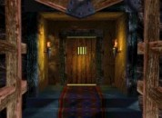
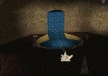
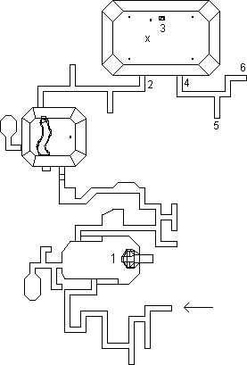

| 1 | Waterfall, holds a unique item, save before using SPACE bar and you will be reward with a powerful item if you try long enought. |
| 2 | Door to Snergle, requires key - below for more info. |
| 3 | Level on chair, opens #4 |
| 4 | Locked door, press lever at #3 to open. |
| 5 | Bones: +5 migth permanently |
| 6 | Bones: Teleport you back to main entrance. |
Leave us a message at mgrounds@hotmail.com